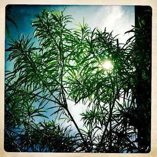

Recovered weblog entry
Sun through the trees

Just started wandering down paths I don't generally walk. Now that we've had a few 80+ degree days here in AZ, the trees have mostly full-size leaves, yet they still have that shiny luster that disappears during the summer heat. Lens: John S
Film: Ina's 1969